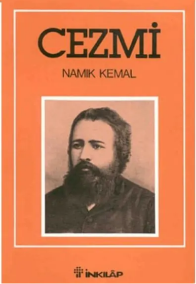
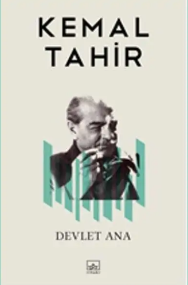
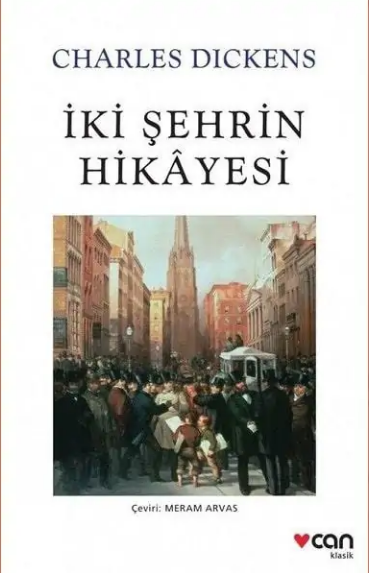
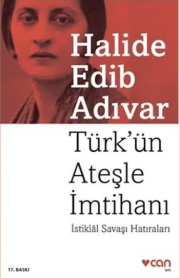

16. yüzyılda geçen romanın başkahramanı Cezmi; hem şair ruhlu, bilgili bir entelektüel hem de usta bir Osmanlı süvarisidir. Osmanlı-İran savaşının patlak vermesiyle gönüllü olarak cepheye giden Cezmi, burada Tatar prensi Adil Giray ile sarsılmaz bir dostluk kurar.
Savaşın ilerleyen safhalarında Adil Giray’ın İranlılara esir düşmesiyle olaylar Tebriz Sarayı’na taşınır. Saraydaki güç savaşları ve aşk üçgenleri (Perihan, Şehriyar ve Adil Giray) arasında kalan karakterler, trajik bir sona sürüklenir. Siyasi entrikalar sonucunda dostlarını kaybeden ve ağır yaralanan Cezmi, derviş kılığına girerek vatanına dönmeyi başarır. Namık Kemal'in bu eseri, vatan sevgisini ve tarihi kahramanlıkları işleyen ilk yerli tarihi romanımızdır.

Türk edebiyatının başyapıtlarından biri olan ve 1968 Türk Dil Kurumu Roman Ödülü’ne layık görülen bu eser, Osmanlı’nın kuruluş sancılarını Anadolu insanının gözünden anlatır. Roman, Ertuğrul Bey’in at bakıcısı Demircan’ın öldürülmesiyle başlayan gerilimli bir atmosferde açılır. Bir yanda intikam ateşiyle yanan Bacıbey ve oğlu Kerim’in hikayesi, diğer yanda Osman Bey’in Şeyh Edebali’nin kızı Bala Hatun ile evlenerek aşireti bir devlet geleneğine dönüştürme süreci işlenir.
Kemal Tahir, Osmanlı kurulmadan önceki Anadolu’nun kaotik yapısını resmederken, halkın güçlü, güvenli ve adaletli bir "Devlet Ana"ya duyduğu ihtiyacı vurgular. Yerel ağızların ve unutulmuş zengin Türkçenin ustalıkla kullanıldığı bu roman, sadece bir tarih anlatısı değil, aynı zamanda Türk toplum yapısının kökenlerine inen sosyolojik bir analizdir.

Charles Dickens’ın "yazdığım en iyi hikâye" olarak tanımladığı bu başyapıt, 200 milyonu aşan satış rakamıyla dünya edebiyat tarihinin en popüler eserlerinden biridir. Roman, Fransız Devrimi’nin öncesinde ve "Terör Dönemi"nin tam göbeğinde, Paris ve Londra şehirleri arasında mekik dokuyan bir grup insanın hayatına odaklanır.
Tam 18 yıl boyunca Bastille Hapishanesi’nde haksız yere hapis yatan Doktor Manette, özgürlüğüne kavuştuktan sonra İngiltere’deki kızının yanına döner. Ancak geçmişin gölgeleri ve devrimin acımasız çarkları, aileyi yeniden Paris’in öfkeli ve kana bulanmış sokaklarına sürükler. Giyotin gölgesinde verilen bu yaşam mücadelesinde; aristokrasinin zalimliği, halkın intikam hırsı, büyük fedakarlıklar ve imkansız aşklar iç içe geçer. Eser, toplumsal dönüşümlerin bireyler üzerindeki yıkıcı ve dönüştürücü etkisini muazzam bir gerilimle anlatır.

İstanbul’un işgalinden Sakarya Zaferi’ne ve Mudanya Mütarekesi’ne kadar uzanan destansı bir bağımsızlık mücadelesinin ilk elden tanıklığıdır. Halide Edib, işgal İstanbul’unda idam cezasına çarptırılmış bir milliyetçi olarak başladığı yolculuğunu, Anadolu’nun çamurlu yollarında bir nefer olarak tamamlar.
Roman; Sultanahmet Mitingi’nin heyecanını, Ankara’da Büyük Millet Meclisi’nin kuruluş sancılarını ve düzenli ordunun çetelerden süzülerek nasıl inşa edildiğini tüm çıplaklığıyla anlatır. Cephede onbaşı rütbesiyle zayiat raporları tutan ve yabancı basını takip eden Halide Edib, Sakarya Meydan Muharebesi gibi tarihin en uzun saha savaşlarından birine bizzat şahitlik eder. Eser, sadece zaferi değil, savaşın ardından yakılan köyleri, Kazım Karabekir'in evlat edindiği binlerce yetim çocuğu ve bir halkın "ateşle imtihan" edilerek nasıl yeniden doğduğunu belgeler nitelikte sunar.